This talk, which was presented at the RNIB's Accessibility Gaming Workshop on the 9th of December 2019, relates some of my experiences playing games with a vision impairment, though I'll also be talking about general low-vision access and inclusive design.
Many thanks to Ian Hamilton for general advice and Dr Amy Kavanagh for her "Blind Button Masher" talk at GAConf EU, which inspired some of the topics covered here.
Overview
There are three parts…
Assistive technology and games
Design and vision impairment
Community involvement
Assistive technology
This section is generally about what you might call "traditional assistive technology" such as screen-magnifiers. Later on we'll also cover assistive features in specific games, and general inclusive design principles.
Assistive technology on different platforms
We'll cover…
Desktop
Console
Mobile
VR
First, though, it's important to talk about a "technology" that goes hand-in-hand with all the above, which people with vision impairments often use, which we'll call "manual zoom". This is moving one's head closer to the object.
🔍
I use the manual zoom almost all the time, even in conjunction with other assistive technologies (though if I notice I'm doing it, I try to adjust things so that, e.g. I can read the computer screen with good posture). This does have the effect that sometimes I feel a bit like a typewriter, as I absent-mindedly manual-zoom and then snap back to the correct position when I notice.
With that being said, let's look at traditional assistive technologies across some different platforms…
Assistive technology
: Desktop
:-( *
Generally, native-app style games on desktop platforms can't benefit from assistive technologies such as screen magnifiers. This is because most games completely take over control of the graphics card.
That being said, web-based games would potentially work with screen magnifiers and web browser zoom, but they may not be designed for it.
Assistive technology
: Console
:-) *
There are assistive features such as pan-and-zoom (and invert colours) on consoles these days, and they can work alongside games.
However, games may not be designed with an awareness of them in mind—much as with web content when using a screen magnifier.
There are also features that enable you to get help from other people when playing games, such as Xbox's co-pilot, which lets two people play, with two controllers controlling the player's character. This allows each person to play the parts they can, and get help with other activities. In terms of vision impairment, exploration may be challenging sometimes (either in its entirety, or because it's easy to miss small-but-important things), so a co-player could assist with things like that.
There are assistive features such as pan-and-zoom (and invert colours) on iOS and Android, and they work at the system level, so they work alongside all apps and games.
As above, though games may not be designed with an awareness of them.
Here are some examples of games that work with screen magnification on mobile and, thus, I can play them…
The Sorcery! series recreates the experience of a choose-your-own-adventure book digitally, which is very cool. Here, the player is shown on a simple map, with the choice of direction indicated by tapping on the map.
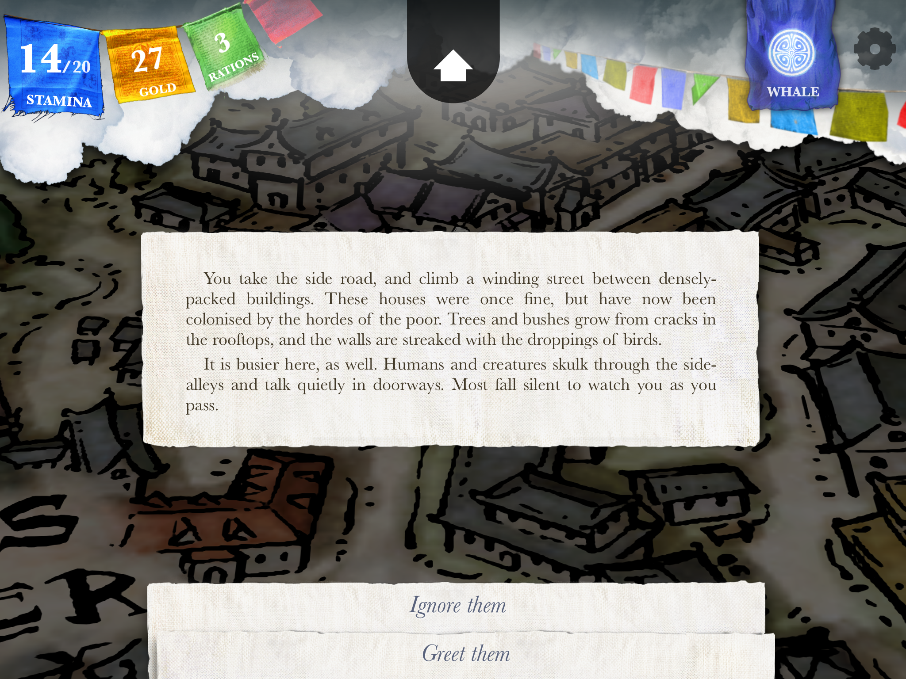
Alas, the layout is such that in order to read the text, I have to zoom in to that part of the screen a lot. I am not sure if it's designed to work well with mobile screen readers.
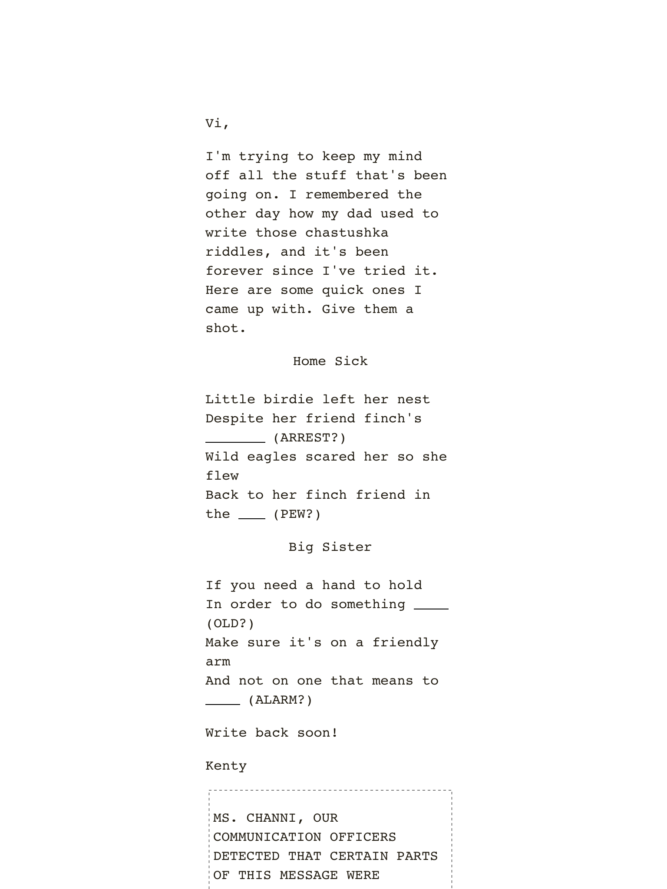
Blackbar is another great game that revolves around text, with very simple gameplay involving filling in words, but still evoking a sinister and compelling atmosphere. I am not sure if it is designed to work well with screen readers.
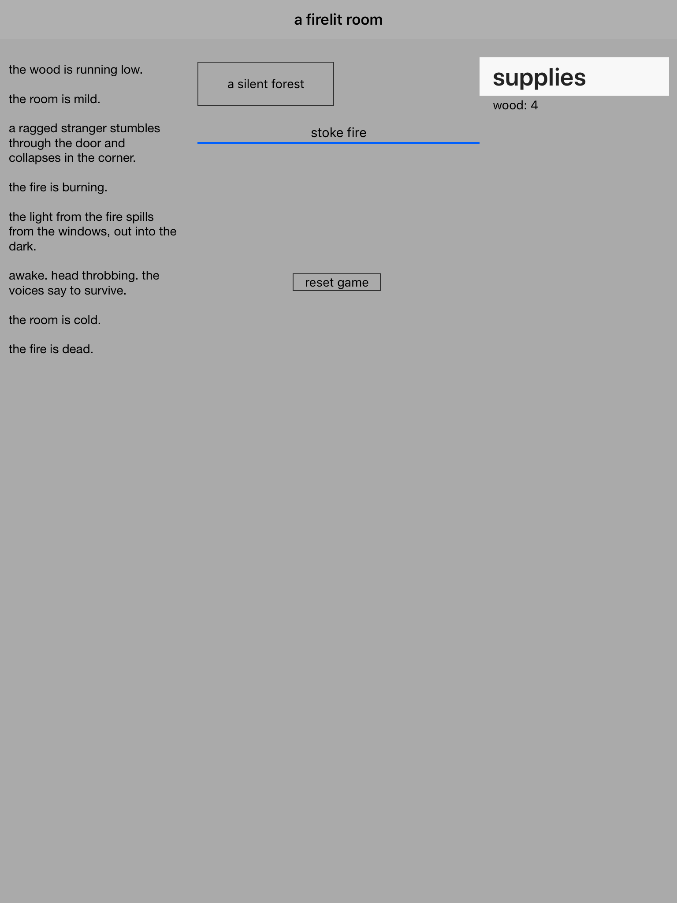
A Dark Room is another game that evokes a vibrant and immersive world through text alone (and some ASCII art at times). If memory serves correctly, this one does work reasonably well with mobile screen readers.
However, you can miss important stuff when zoomed in., as the following example shows.
In Machinarium, I was zoomed into the area of this screen where the robot is, on the left, and missed some of the help text on the right, but I did see some of it, so I was alerted to the fact that I was missing something, and re-started in order to read it.I completely missed this help text on my first play-through.
Games on mobile devices could also be seen as assistive technology.
Sometimes games themselves could be considered as assistive technologies, when their presence on a different platform enables people to play them when previously they couldn't. A great example of this can be digital versions of physical board games, which can help players by carrying out repetitive or demanding actions, such as set-up and moving pieces appropriately. They can also automatically carry out actions that need to happen every turn, which players of the physical game must perform manually.
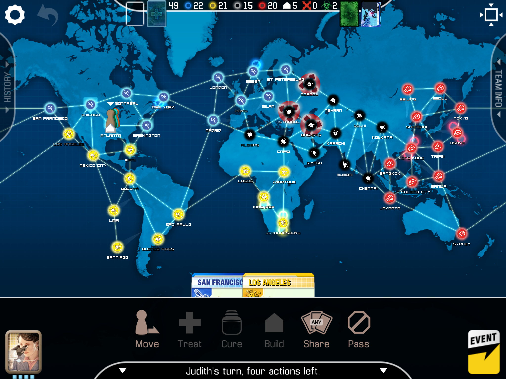
The digital version of Pandemic keeps track of the players' turns and actions, and carries out disease propagation tasks as required between turns.
One more thing…
You can use some mobile devices, such as the iPad as an assistive technology. As with apps, games can benefit from the larger screen size. You can also enlarge games designed for the iPhone on the iPad using the "x2" button.
x2 button
However most games these days seem to have variants specifically designed for iPad, which means they usually keep the small text in exchange for larger screen-space for displaying the game world.
Assistive technology
: VR
Virtual Reality is really exciting these days. I have not got VR at home, but I have been lucky to try it out a few times, and the promise in terms of storytelling and fun is tantalising. Here's a trailer for an upcoming game from a well-respected developer that looks and sounds very compelling.
Microsoft has been doing some research into accessibility in VR environments, with very interesting results. The SeeingVR toolkit is a set of Unity (a very popular game engine and development environment) plugins that provide assistive features for VR environments.
Some of these are post-processing filters that require no intervention from the developer (e.g. contrast and edge enhancement). Others are parameterised and require some input (e.g. highlighting important objects). The possibilities for improving access in games and other scenarios are tantalising.
One really interesting idea about accessibility in VR—alas I'm no longer sure where I picked this up—is that the virtual world could provide things like magnifying glasses to act as assistive technologies in-keeping with the world. I find this idea fascinating, though I would rather somehow have the world adapt to my needs. It did make me think that maybe these sorts of experiences could be used to show people without disabilities what it's like having one, but I digress.
Content design is paramount in games, and can achieve a huge amount for accessibility, as well as providing an immersive and compelling world for players. This section discusses several aspects of design that can have a large effect on accessibility. We're going to talk about…
Text size
Colour
Detail
Style
Narrative
Reactions
Orientation
Before we do, though, I can't emphasise enough that for great accessibility advice, including examples of games that embody that advice well, you should really check out the Game Accessibility Guidelines, created by Ian Hamilton, Barrie Ellis, Gareth Ford-Williams, Lynsey Graham, Dimitris Grammenos, Headstrong Games, Ed Lee, Jake Manion and Thomas Westin…
Design
: Text size
#1
Text size is the #1 complaint about game accessibility.
As an example, I was really looking forward to exploring the wonderfully-realised world of Deus Ex: Human Revolution, as earlier entries in the series are some of my most favourite games, and favourites of many others too. The following video shows someone walking around one of the early areas, finding all sorts of interesting details and characters, but then alas picking up an e-book and… the font size is tiny and can't be configured: d'oh!
There are some good features in this environment and in the game: the signage in this facility has quite large type, and the game's mini-map uses shape as well as colour to indicate what it's indicating (though a bit of manual zoom is required to read the head-up display, or "HUD").
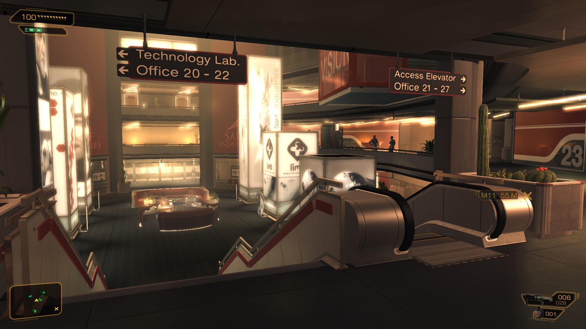
However, the e-books and similar interfaces, like the computer terminal pictured below, have a fixed and not too big font size, and perhaps some contrast issues too.
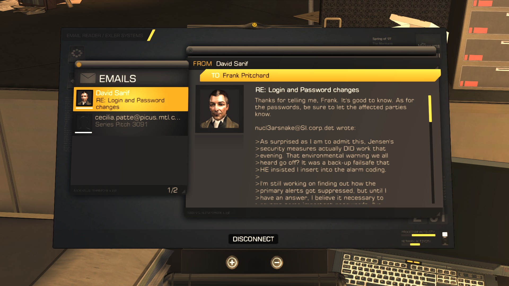
But this is an eminently solvable problem. The original Unreal Tournament game (a wildly popular and venerated multiplayer-focused first-person shooter), released in 1999, provided an option in its user interface to double the size of fonts and all UI elements.
This was super-helpful for me, even though I only ran the game at relatively low resolutions, as it enabled me to access the interface quite easily. (In fact I use the same technique on my Mac these days to make its UI a bit easier to read, but not rely on screen magnification.)
Incidentally, Unreal Tournament's GUI was quite sophisticated—to the point that one popular modification for the game was not actually a change to the way the main game worked, but a re-recreation of the classic puzzler Tetris, which ran in the in-game GUI. Generally, interfaces have got simpler since thing, and that's a good thing, but if a twenty-year-old game can provide such a sophisticated user interface, with a scaling option, then more games should!
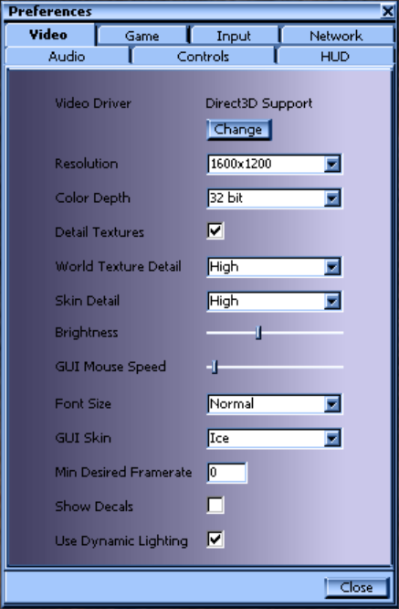
Being able to scale text and the UI is becoming even more important for developers, too. Nowadays the industry is starting to consider cross-platform games, and even streaming games across multiple devices. This means games may be presented on a wide range of displays, of wildly different sizes. Techniques to make these accessible could be very useful—and there's a great example of adaptive user interfaces that tailor themselves to the user and device's needs from the world of research.
Design
: Colour
Some games have options to assist users who struggle to see colours. For example, Frozen Bubble offers an option to include shapes as well as colours. This is what it looks like normally…
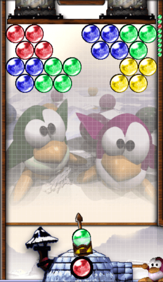
…and this is what it looks like with the option turned on…
Games have generally got considerably more detailed over time—from the resolution of the overall display, and the number of colours and textures simultaneously displayed, to the level of detail in the characters, objects and locales in the game world.
Because earlier games were limited quite significantly by display resolution and palette, they often employed styles and techniques that made them more accessible, such as large text and high-contrast colours. When coupled with original gameplay and well-made storytelling or solid action, some early games are still favourites.
The Descent series was a pioneering six-degrees-of-freedom robotic first-person-shooter, with low-res graphics and enticing bright colours.
Overload is a modern rekindling of the elements that made Descent so special. It has a retro look, but is considerably higher-resolution. It's also quite colourful, which makes a pleasant change from the muted palettes of greys and browns that pervade modern "realistic" games.
A scene from the original and rather low-res seminal first-person-shooter Doom. The resolution is low, so fairly bright colours are used to distinguish the walls, floor and radioactive pools from the enemies.
Here's a scene from Doom 3, which has massive amounts of detail in the scene geometry and the model of the Revenant enemy that the player is facing. But there is a more realistic look, with a detailed but rather muted palette, which can make it hard to take in all that detail.
An even more detailed scene from Call of Duty: Modern Warfare, which has incredibly high resolution details of a blossoming tree as the centrepiece of an ornate atrium within a building that appears to have middle-eastern architecture.
Adventure games have changed in visual fidelity a great deal too. Here's a cult classic called "Beneath A Steel Sky". The scene is limited by its low resolution, but this has encouraged a lot of creativity from the designers, who've successfully evoked a compelling world. The colours are reasonably bright, and the text that shows what the characters are saying is quite large.
Incidentally, the text is mainly there because the floppy-disk version of the game couldn't accommodate voice recordings for all the dialogue, but they did still include the text in the version with the spoken words, so they kind-of acted like subtitles, and were nice and big and easy to read.
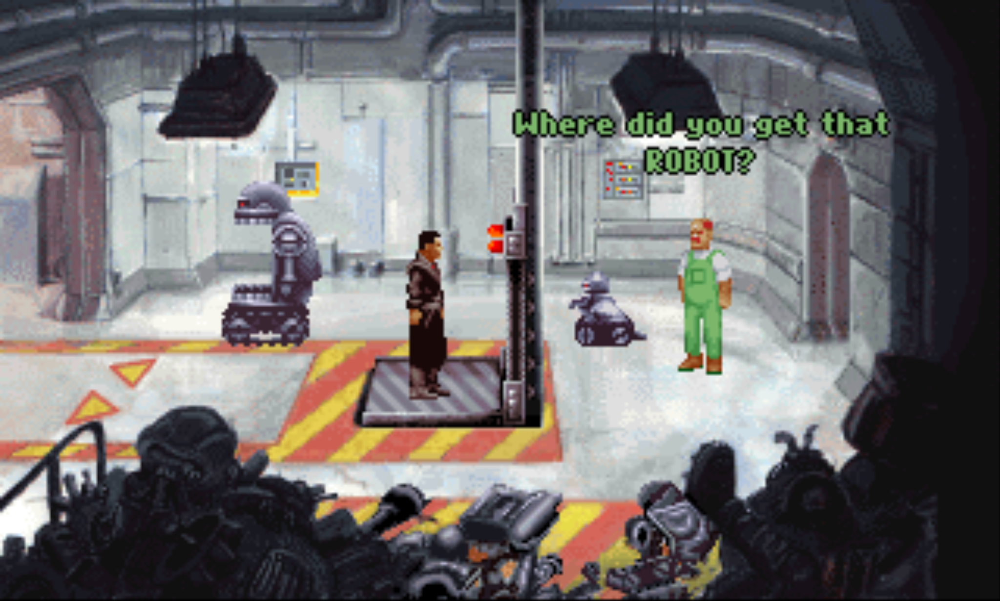
Here's the more modern and beautifully-realised Machinarium, which again has much more detail and a more muted palette. Whilst I found some aspects that were important for the game hard to see, I did have fun playing it.
One genre I've found much harder to play these days is racing games. Classic early-'90s games like Lotus Turbo Challenge 2 (the original Amiga release of which has some absolutely awesome opening music) had high contrast between the road, other terrain and the cars.
Modern games such as Forza Horizon 4, which look so realistic that I almost thought this screengrab was a photograph at first, provide a pretty fantastic experience to the player, but I struggle with taking in the important detail out of all the detail that is available there.
It should be noted however that, as with many other game developers, the team behind Forza is putting much work into accessibility features. Some examples of existing features include the extensive array of driver assists that are on offer in the game. These include: showing the optimal driving line in the form of blue chevrons on the track/road surface; automated braking, shifting and steering, and other features.
Generally I find that games that are more cartoony can be easier to see, as they tend to use bright colours. Mario Kart 64 is a classic mid-'90s example of such a game, on which I spent many hours and got pretty good!
I recently tried the latest entry in the Mario Kart series, which has a similar style, but much higher resolution and level of detail. I am perhaps a bit out of practice, though I felt that playing this one was quite a bit more difficult due to the combination of the speed and much more visual complexity to take in.
Dungeon Keeper—a masterpiece of a game in which you are the overlord of an evil dungeon and its denizens, hell-bent on destroying any pesky heroes that try to come in and vanquish you—has a user interface that is very-much tailored to its low-resolution nature, which results in very clear text and iconography. So even though the colour palette is somewhat muted, it's usually not to hard for me to figure out what's going on. The highly variable zoom levels help a bit there, too.
Again, this reinforces the main reasons why more "classic" games are generally more accessible to me—they're designed with my hardware limitations in mind :-).
Design
: Style
Sometimes the aesthetics of a game actually make it more accessible. Two popular styles at the moment are really enticing for me: retro-style pixel art and synthwave. These involve low-res graphics and/or bright colours, which are pretty ace for me.
VVVVVV is a retro-style platformer from 2010, which has very sparse and high-contrast graphics.
Here's the opening scene from Sonic the Hedgehog, which also has relatively low-res and bright graphics, but I generally found it so vast-paced that I couldn't keep up—mind, Adi in his talk pointed out that the sound design is great, and can really help the player pick up on what's going on.
The immersive action-parkour game Mirror's Edge tasks the player as a "runner"—someone who can courier sensitive information between people, across the rooftops, away from the prying network-monitoring eyes of the dodgy city-state. The player must negotiate many different and varied obstacles, and the game feels like it is very free-roaming. But in order to help the player know where to go, they're imbued with "runner-vision", which causes objects they need to traverse to stay on-track to appear bright red.
Runner-vision is great because of its high-contrast nature, which fits well with the overall aesthetic of the game, which is generally white surroundings on the rooftops with occasional splashes of colour, beneath a clear blue sky. Because of that I find it fairly accessible. But also it gives the player the ability to keep moving and really get into the flow of the parkour, which makes the whole game compelling and immersive.
The mobile game Chameleon Run is a platformer that uses only one button (so it could be more accessible to people with motor control or dexterity difficulties, too—there's an excellent site about one-switch games if you'd like more information). The idea is to jump between platforms of alternating colour, being sure to flip the player's colour to match the platform they're about to land on. Aesthetically it's very bold, clear and bright, which makes it quite clear to see.
The hugely popular contemporary game Minecraft, an open-world sandbox game where players mine blocks from the landscape to collect material to build various structures, adopts a purposely simplified approach, where almost everything is delineated into cubes. This makes learning the tools for creation simple, but has by no means stifled creativity (constraints are well-known to inspire creativity). It creates another rather clear and retro-looking atmosphere visually, too.
Matching the Minecraft aesthetic, the procedurally-generated first-person rogue-like (i.e. you only get one life) dungeon-crawler Eldritch casts the player into a Lovecraftian world of slightly pixellated horrors. Its relatively simple geometry has I gather helped make it much easier to code up the dynamically-generated levels—no two playthroughs are the same—and it, as with the other games above, to keep the visuals simple and easy to follow.
Here it is in action…
I've always enjoyed platformers, and games that only need one button are also great (there's an excellent site about one-switch games if you'd like more information). illi is another high-contrast and attractive, but clear-looking platformer, which has a simple gameplay mechanic—jumping when the user presses the button—that's built up over several levels into something that can be quite challenging.
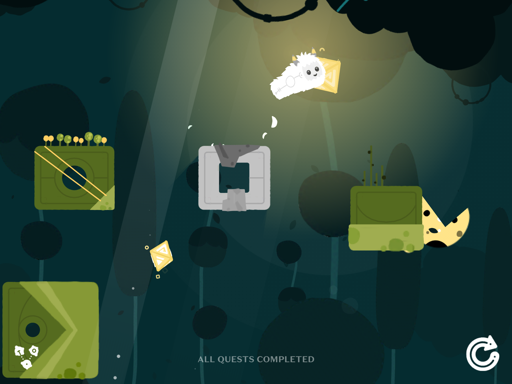
Here it is in action…
The Nightjar (and a its predecessor and sister game, Papa Sangre, sadly no longer available in the App Store) use audio not only as the main source of output, but the only source of output. They're set in environments that are completely dark, forcing the player to rely on sound alone. The sound is very sophisticated and creates a visceral and scary 3D atmosphere.
Games that use audio primarily, or entirely, are often called "audio games" to contrast with the more conventional "video games". Check out AudioGames.net for some great info, reviews and community discussion about audio games.
Design
: Narrative
Half-Life was a landmark in first-person shooters, as it brought the narrative right into the game. One of the most popular ways of conveying the story to players previously was by having video cutscenes between levels. In Half-Life, though, the player is fully immersed in the story because set-piece events simply happen right there whilst you're exploring the level. This is now the standard for the industry.
Incidentally, when Valve software created their own in-house engine for Half-Life's sequels and other projects, they added closed caption support. This was a massive boon for accessibility at the time, but also enabled Valve to market the game in languages for which they had recorded voice acting—a win for everyone. More details on this in the GamesCC project's interview with Marc Laidlaw from Valve.
Unreal, a contemporary of Half-Life, used a more traditional means to provide the story—the player could pick up books, diaries and computer pads left by people (and aliens), and read them. The story was pretty cool—and that game too is a classic, full of huge, diverse, but exceptionally well-themed and vibrant environments, so it always grabbed my attention—but this way of storytelling is less accessible, particularly due to the lack of variable font size (Unreal predates the awesome efforts done on Unreal Tournament).
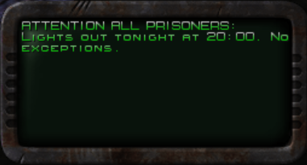
As it happens, Unreal was one of the first games to support 3D and environmental sound effects—so being inside a cave vs out in the open would really sound how it should—so it provided many other successful ways to immerse the player.
Around the time the Apple Watch first came out (which was a really interesting device for accessibility—I loved the haptic direction-giving feature, but always found general text too small to read) a new type of game emerged. Lifeline is a casual game that takes place over several days. You receive a notification (on your watch or phone) from a desperate traveller who crashed on an alien planet, and needs your help to survive.
Gameplay usually consists of getting a notification (or two), making a decision and sending back a canned response to the stranded traveller. It's like a choose-your-own-adventure book, but having the experience as if this person is really sending messages to you, and having to do things like searching the web for answers to really unusual questions. It can also be quite accessible, as you can use at least some traditional assistive technologies to access the content, and you can take it at your own pace. A really novel fun time!
One thing that the developers of Machinarium did to address the language barrier was to not use any spoken words, but rather present pictrograms in speech bubbles for the characters. This was overall quite clear and gave the game an endearing and different feel, though I would've liked to the bubbles to stay on-screen for longer, and maybe have a replay button in them.
Design
: Reactions
We discussed Chameleon Run earlier, and how accessible it can be. However, as with many games—even those that are bright, clear and only require one switch to operate—I often find a point where things just happen too fast on-screen for me to react. It would be great to see the developers offer an option to slow things down.
One really popular activity with gamers is to make "speedruns" of their favourite levels or games. These involve them completing the game as quickly as possible without cheating—though they often use odd glitches in the game that are researched and discovered over time. People like racing, even digitally :-). Anyway, here's a speedrun of the first level of Chameleon Run. Whilst no casual gamer would play it this fast, it simulates how it feels to be overwhelmed by the speed of things.
I mentioned that racing games can be tough for me because there's so much to look at, and things happen so fast. One helpful feature for this can be found in rally games, where your navigator tells you directions as you go. Below you can find an example from Dirt 2.0
This is a really great example of an assistive feature, because it is fully centred in the game world, so using it feels normal, immersive and not even like an assistive feature at all.
Games that are turn-based also offer inherent assistance to players, in that there's often no, or very little, time pressure to complete moves. The turn-based strategy game Worms sees rival teams of worms fight it out over a randomly-generated landscape with a vast array of high-tech assault weaponry. And priceless Ming vases, and holy hand grenades. (It's awesome :-).) The game also provides very smooth zooming in and out of the theatre of combat, which is nice.
Quite often in games, there'll come a point of crisis for a character and the frantic nature of trying to get out of that crisis—either an oncoming obstacle, or the prospect of a finishing blow from an opponent—is represented by the need to press certain buttons on the controller at precisely the right time. The right time is usually indicated by a visual cue, and the pressing of the buttons is usually required to be quite extensive, hence the nickname "button-mashing".
🎮
These sorts of interactions present several accessibility barriers, and it is great when games offer the option to skip them (which isn't often historically, but this, as with other efforts, may be changing).
Design
: Orientation
Getting oriented in the game world can be a challenge for anyone. There are various devices and approaches that have been used to help players understand where they are, and where they need to go. These vary from the very un-subtle (e.g. the use of massive floating arrows to guide the player to their destination, not necessarily in-keeeping with the game universe, but quite easy to see) to the more immersive, such as the guide-bot in Descent II.
The guide-bot is a companion you can find to help you guide your six-degrees-of-freedom flying ship around varied and twisted mines on far-flung planets. It can be programmed to take you to a range of objectives, from keys to shield power-ups, and really helps if you get lost.
Maps are another popular means of providing directions in games. Grand Theft Auto 4 provides a map that doesn't rely on colour, and uses symbols to indicate the types of places available to visit. This is really helpful, though I always find myself doing the manual zoom in order to be able to read it.
Some games even came with real, physical maps! This was really popular with flight sims, and also with space exploration/trading/pirating/mining sandbox games, such as the epic Elite and its sequel Frontier
Different colours, but not different shapes, are used to identify different systems. I can't actually remember the significance of the colours!
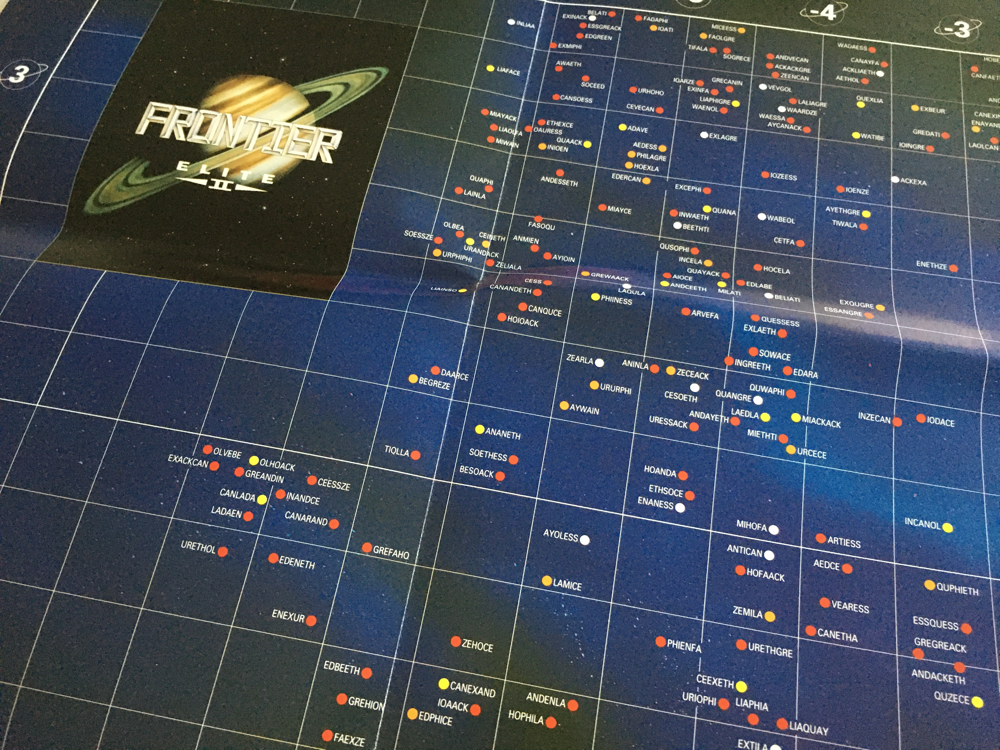
Augmented Reality (AR) is going to be very cool, and has such potential for accessibility. I wanted to mention an app that used to be on the App Store that helped people navigate to their nearest tube station in London by overlaying the station signs onto a real view of the real world, via the phone's camera. This is similar to the techniques used in games, but applied to the real world.
Mirror's Edge and its runner-vision came up earlier. The technique of highlighting things to help the player proceed, often done with the nifty idea of "as you're highly trained in doing this job [whatever it is], you can see what you need to do naturally" to aid immersion, is a really cool orientation technique. Here's an example of runner-vision.
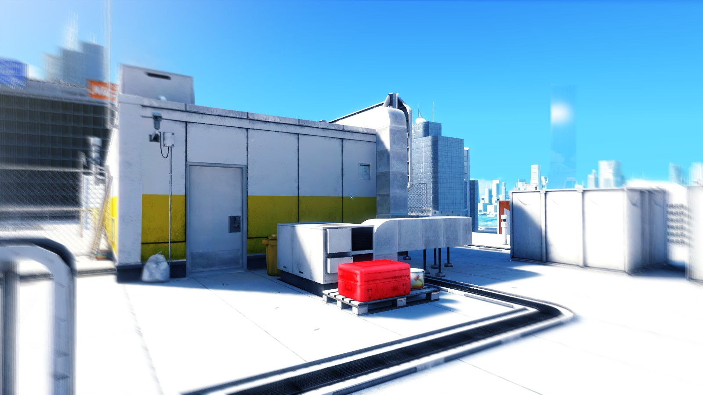
Community
Community
The social inclusion brought about by gaming shouldn't be underestimated. Being able to talk to friends about experiences in games is a huge aspect of gaming for many people. Accessibility features in the latest games can help here, by ensuring that people can all play the same games, but that's only part of the story: the surrounding community must be accessible too in order for all those benefits to be realised.
In this section we're going to cover…
Communication
Online play
Mapping
Modding
Community
: Communication
Real-world and online communities are also a huge part of gaming. Various means of communication are used, including the ever-popular web fora, which can bring their own accessibility barriers.
Another once-very-popular way of playing games communally was a "LAN party" which involves physically getting together with other games. With the rise of gaming over the Internet, this is less popular now, but still warrants a mention.
Discord (primarily voice chat) is another popular communications medium.
"Streaming" has become a massively popular way for people to experience games. This is where somone plays the game and broadcasts it to viewers, maybe providing some commentary as well. The viewers are shown the video stream and there's usually an accompanying chat window/pane that the viewers can use to communicate between themselves and the person doing the streaming (the streamer). There are several streaming communities out there…
The chat feature mentioned above can of course present several accessibility challenges, from the fundamental web accessibility issues that might occur (ensuring keyboard operability and the correct name, role and state information being exposed to screen-readers) but also the sheer volume of messages can be quite overwhelming. It's possible that good filtering controls could mitigate this, but it's not necessarily a trivial problem to solve, and has made me feel somewhat excluded from live streaming events.
Community
: Online play
Some multiplayer games have very fast-paced gameplay. This can be rewarding when mastered, but can very easily present insurmountable barriers to some gamers. Quake 3 is notoriously fast, fluid and fun—but only if you've got near-perfect timing and accuracy. I do think that playing games has helped me hone my hand-eye co-ordination, but equally I doubt I'd be so great at playing against fellow humans.
💬
Given the super-fast gameplay shown above, which presents challenges (and fun!) enough, adding standard in-game text-chat to the mix can present whole new challenges, much as with the streaming chat issues above.
🤖
For this reason, I never really played much online. Nowadays, with voice chat, that might be easier. Historically I've got a lot out of playing with computer-generated "bots" instead. They don't play as people might, but they can present a reasonable challenge.
Some games, however, are designed for co-operative play, and that can be very rewarding, as you can get help from your co-player, ranging from normal in-game stuff to accessibility assistance, like reading out small text or describing the environment.
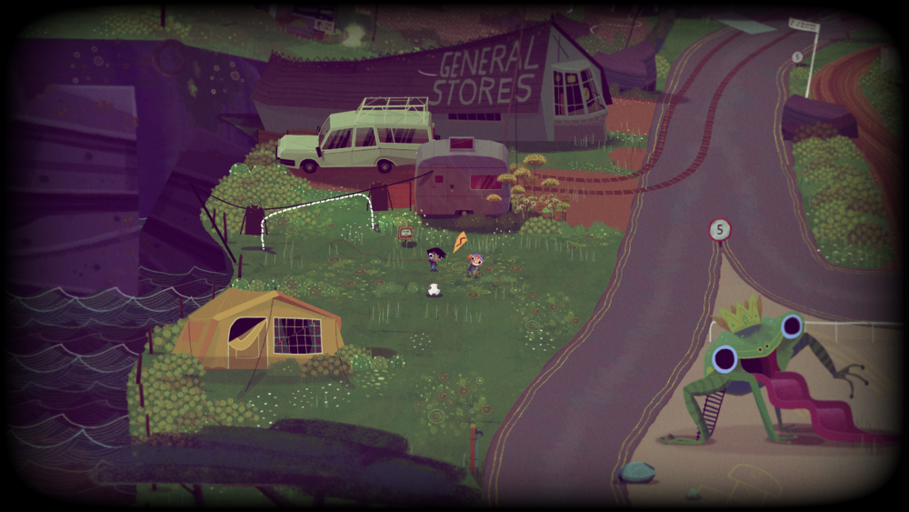
Knights and Bikes is a co-op story-driven adventure game
As much as people may enjoy playing games, they often enjoy creating them just as much, if not more. Mapping—i.e. making levels, or "maps", for games—is very popular. Nowadays games often come with mapping tools built-in.
Maps and their editors can range from relatively simple, tile-based 2D environments (used in top-down games such as real-time strategy or some adventure or side-scrolling platform games)…
…to full-blown 3D CAD-style environments. Game engines, and the tools they provide (which are often the same tools that the developers used to create the game itself) are so sophisticated that they are often also used for other purposes, including academic research.
Many moons ago I worked on a proof-of-concept tool for mapping that used structured-text descriptions of the levels to be created, rather than a visual interface. Here is an example of a map for the ancient but venerable Quake in a traditional graphical 3D editor…
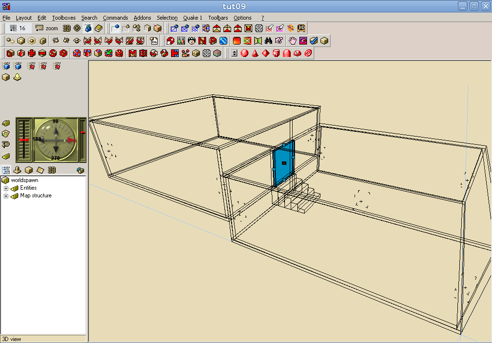
This is what it looks like in-game…
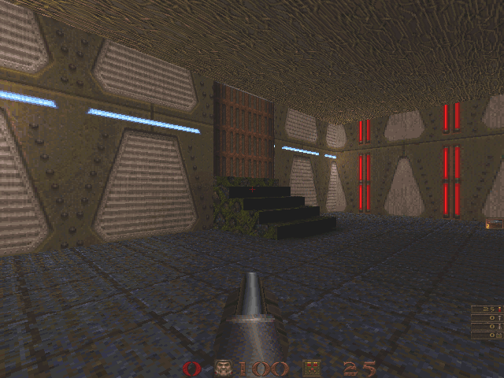
However, we could express this problem a different way: we could describe the relationships between the different rooms in the level, and how we might like the map textured and lit, and then have the computer create the actual layout for us.
The following XML description gives us the same information as the design in the CAD-like editor above.
This example comes from the AGRIP AudioQuake Level Description Language, which has very simple geometry due to my poor maths, but has provided a means for blind people to make their own 3D levels.
Community
: Modding
Another way people can get creative with games is modifying the way the game behaves, rather than the environment in which the player plays (or, even, as well as the environment). A very popular class-based capture-the-flag game called Team Fortress started out as a modification, or "mod" for Quake. Later it was re-implemented in Half-Life and then it eventually was given its own separate release, with a quite highly tweaked graphical style, as a stand-alone game called Team Fortress 2.
This all came about due to the original effort of people in the community. It's actually happened several times now that a fan-made mod ends up turning into a major stand-alone gaming title, often with the fans who developed it getting hired as developers in the process.
Providing access to modding games, much as with mapping, can be a really great educational and creative experience.
For making modifications, one of the main tools needed is a code editor. It could be one that comes with the game, thus requiring that accessibility was considered in the development of its UI, or it could be any standard editor.
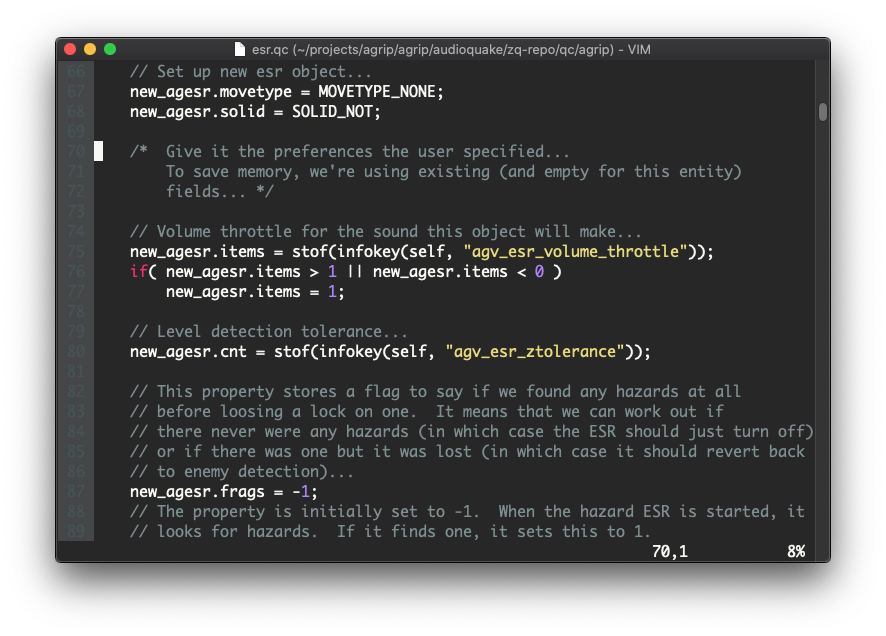
In summary…
I hope you have enjoyed this wandering through my experiences as a gamer with a vision impairment. There are a number of things that we have covered…
Games are awesome.
They present a lot of accessibility challenges.
There are also a lot of accessibility opportunities, and developers are working on many improvements in these areas.
The design choices that go into game content are just as important, if not more so, than integration with assistive technologies…
…but the more integration with players' assistive technologies, the better :-).
Also of vital importance is access to the surrounding community of playing, communicating about, mapping and modding games.
As others in the seminar have pointed out, the best thing that developers can do is continue talking to disabled gamers and getting us involved in the game design process.
Slides mode displays each slide one at a time, as they would be projected for the audience. The extra information present in story mode is not displayed. Keyboard shortcuts or buttons can be used to move between slides.
Content errors detected
An error, or errors, were detected in your presentation's content—open the browser console for more info.
Loading…
Slides mode help
Tap either the left or right third of the screen to move to the previous or next slide. If you have a keyboard attached, you can use the following shortcuts.
Key
Action
S
Switch to story mode.
L
Lock the current slide: disable all navigation keys, so if you're using a screen-reader, you can explore the current slide with your virtual cursor.
F
Toggle full-screen slide view (not supported on iPhone).
→↓Page Down
Next slide.
←↑Page Up
Previous slide.
Escape
In slides mode: disable the current slide lock (no effect otherwise).
In story mode: go to slides mode.
P
If you're running a screen-reader, announce the current slide progress as a percentage.
O
If you're running a screen-reader, announce the current slide number and the total number of slides.
?question markh
Toggle this help dialog
View and Info
Story mode allows you to read the presentation as a document, rather than a collection of separate slides, and includes extra background information on the content.
This presentation does not support Internet Explorer, sorry. Please use Firefox, Chrome, Opera or Edge.


#/media/File:Lotus_Turbo_Challenge_2_-_screenshot_(Amiga).jpg){kind=link}
{kind=link}